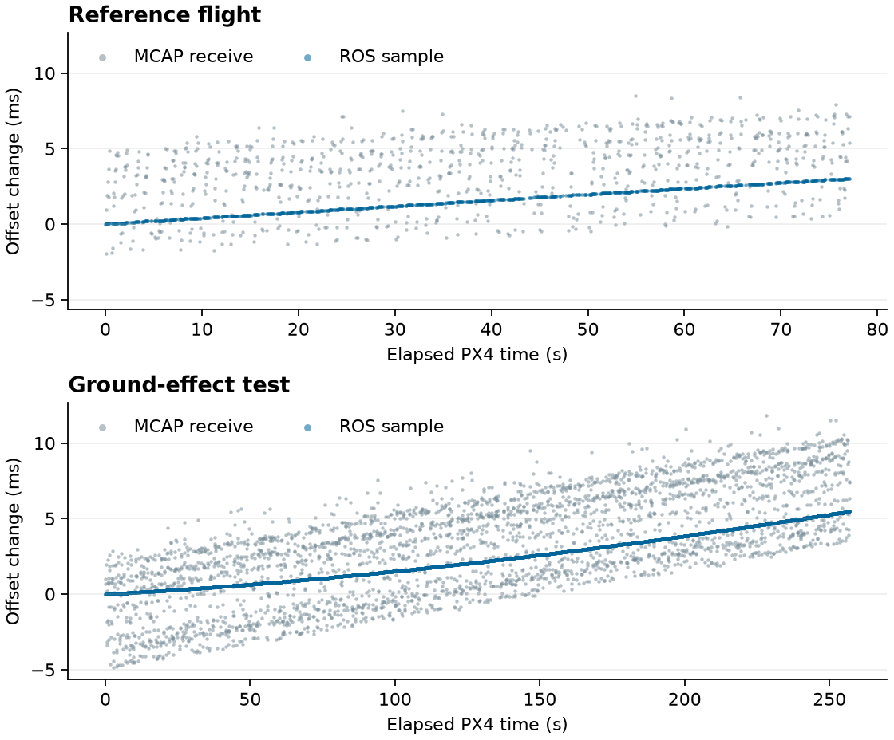

Clock drift in two PX4 flights
In a 257-second ground-effect test, the same attitude samples appeared in the flight controller log and the ROS 2 bag with timestamps that moved 5.50 ms apart. The measured rate difference more than doubled between the first and last quarters.

Which clock are you testing?
The bag’s /fmu/out/vehicle_attitude mirrors the PX4 estimate. We matched the four float32 components exactly and kept payloads occurring once on each side. This gives a shared event without assuming the clocks already agree. Swapping the two bags yielded zero matches in both directions.
| Matched events | Reference | Ground effect |
|---|---|---|
| Unique pairs | 935 | 3,123 |
| Duration | 77.10 s | 256.90 s |
| Sample rate difference | +38.98 ppm | +21.53 ppm |
| End-to-end offset change | +3.014 ms | +5.497 ms |
| Receive minus sample, P95 | 8.07 ms | 13.27 ms |
Positive ppm means the ROS payload clock advanced faster than PX4 boot time. The estimate includes timestamp translation along the bridge. The receive timestamp also reflects recording and transport timing. Identifying hardware oscillator error or one-way link latency would require an independent reference.
Does one correction last?
We fitted a constant offset and a straight line to the first two thirds of matched events in recording order. On the final third, the P95 absolute sample-time residual fell from 1.973 to 0.040 ms on the reference flight and from 3.980 to 0.956 ms on the ground-effect test.
The ground-effect test measured +13.61, +19.18, +24.09 and +28.43 ppm across four equal-duration intervals. With MCAP receive timestamps, the straight-line model still left P95 residuals of 3.98 and 3.88 ms on the two flights. A narrower matching window needs validation on later samples.
Over the matched intervals, the recorded TimesyncStatus.estimated_offset changed by −2.978 and −5.486 ms, respectively. Its sign runs opposite to the ROS-minus-PX4 difference measured here. Both ULogs identify PX4_FMU_V6X, record SYS_HITL=0 and include airborne and landed states.
Both captures come from the same research project. The findings characterize its recorded clock path and do not measure independent ROS orientation accuracy or packet loss.
Reproduce the measurements · Original logs from the BioMorphic Intelligence Lab